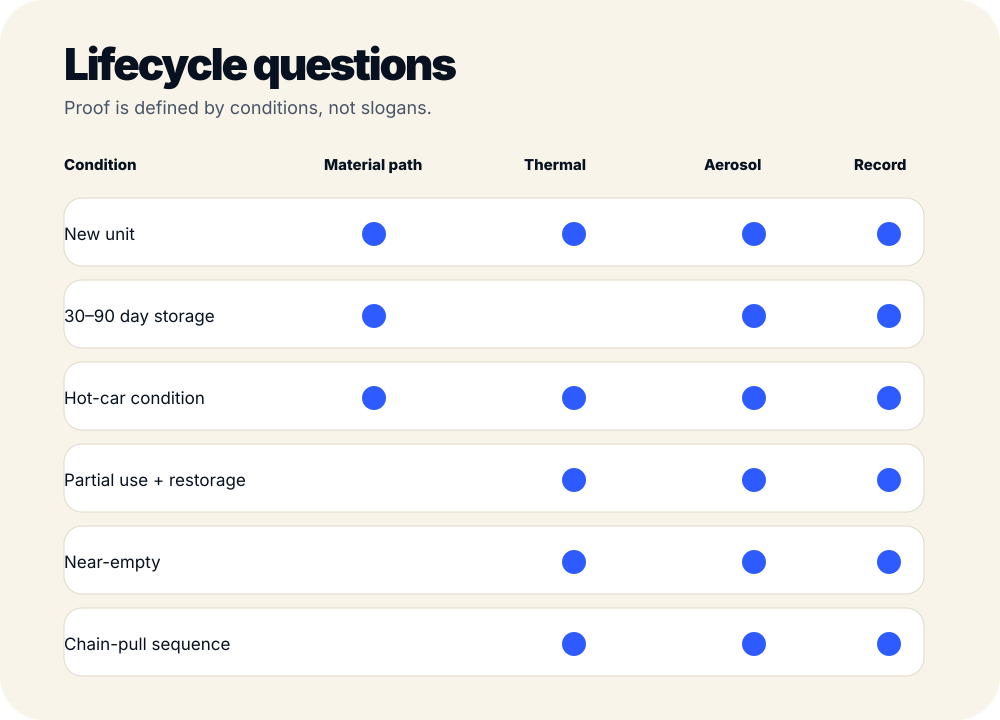
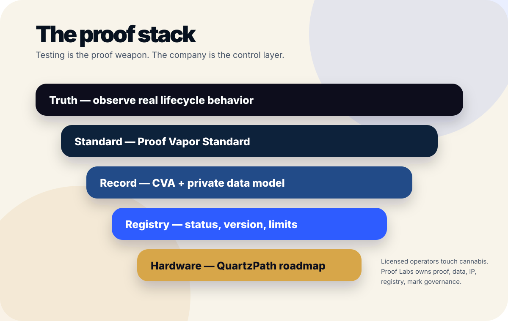

Oil COA is not enough. Show the vapor path.
Proof Labs is building the full-lifecycle proof layer for cannabis vapor: material-path mapping, heating-element validation, aging and storage studies, controlled thermal testing, aerosol analysis, CVA records, registry infrastructure, and proof-native hardware standards.
The mission is simple: anything people inhale should be measured, mapped, and proven — not trusted because of branding.
Most product proof stops too early.
A standard oil COA can be useful. It does not fully answer what happened after oil sat inside a device, touched internal materials, met heat, moved through the vapor path, and emerged under real use conditions.
What did the oil touch?
Reservoirs, seals, metals, ceramics, adhesives, polymers, mouthpieces, airflow paths, and heater-adjacent surfaces must be mapped.
What did heat change?
Thermal profiles, hotspots, chain pulls, near-empty operation, and heater aging can change the system beyond the original oil record.
What came out?
The relevant proof question is not only what went in. It is what came out after storage, aging, heat, and defined stress conditions.

Testing is the proof weapon. The company is the control layer.
Proof Labs starts with truth and standard because the standard defines what better hardware must satisfy. The long-term moat is standard, data, registry, IP, lab network, partner contracts, and proof-native hardware.

Clear names. Clear roles. Clear boundaries.
Every layer has a job. The mark and public claims stay locked until testing, legal review, IP posture, and governance support them.
Proof Vapor Standard
Defines what serious vapor systems should be evaluated against.
RecordCVA
Records defined results, conditions, limits, and status.
RegistryProof Registry
Future system memory for versioned proof records.
HardwareQuartzPath
Proof-native hardware roadmap designed backward from the standard.